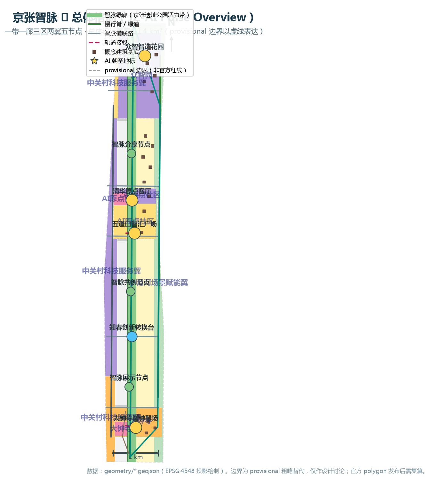
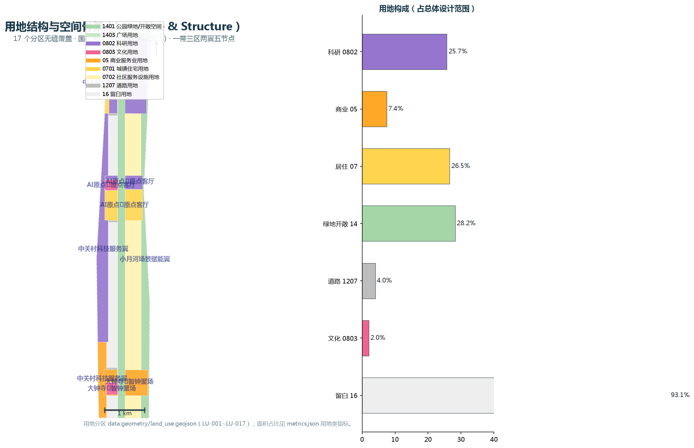
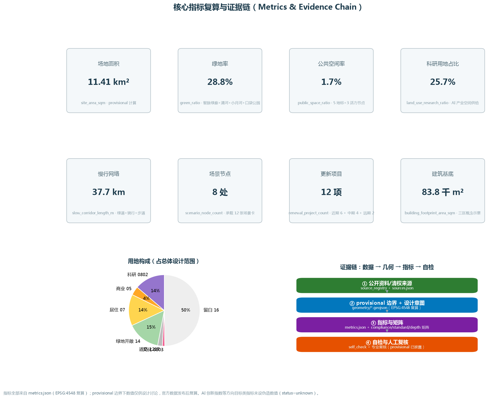

边界披露：本方案使用 provisional 粗略替代边界（虚线表达，非官方红线），仅用于设计讨论与自检；官方 polygon 发布后须复算全部面积类指标。控规容积率/高度等条件缺失，相关数值均为概念建议（待确认）。
总览地图Overview

图1 京张智脉总体格局：智脉绿廊为脊、三区两翼为体、五节点为眼。边界为 provisional 虚线。
三层范围Three-Level Scope
| 层级 | 官方面积 | 本包几何 | 设计深度 | 对应章节 |
|---|---|---|---|---|
| 统筹研究范围 | 约 43.6 km² | constraints#PROV-RESEARCH-001（provisional） | 战略研究 | 第三章 |
| 总体设计范围 | 约 11.4 km² | site_boundary#PROV-SITE-001（provisional，计算 11.41 km²） | 控规深度城市设计 | 第四章 |
| 重点区域范围 | 约 368.4 公顷 | key_areas#PROV-KEY-001/002/003（provisional） | 规划综合实施方案深度 | 第五章 |
重点区域Key Areas
众智园 AI 自主创新加速区
192.1 ha · 北
花园型 AI 创新街区：基础模型研发、算力调度、开源实验室、自主创新加速器，承载 AI 全栈自主创新与安全治理。
北京 AI 原点社区
104.3 ha · 中
近校型创新街区：清华园火车站文化客厅、成果转化、开源基地、人才公寓，低扰动有机更新。
大钟寺 AI 产业集聚区
72.0 ha · 南
城市型创新街区：智能体企业、内容消费、TOD 接驳、智钟聚场，数据要素与数字资产流通试验。

图2 三处重点区域详细设计索引。
用地分区Land Use

图3 用地结构与空间骨架：17 个分区无缝覆盖，国标用地代码（MNR 2023）。
交通慢行Mobility

图4 交通慢行与蓝绿公共空间复合系统：1 脊 2 环 3 横 5 联。
蓝绿公共空间Blue-Green Network
蓝绿体系："一脊三带多园"——智脉绿廊（京张遗址公园活力带）+ 清河滨水带 + 小月河绿带 + 三处口袋公园；慢行脊 37.7 km 与蓝绿空间复合。AI 朝圣地标：清华原点客厅、大钟寺智钟聚场、众智智造花园（+五道口智汇广场、知春创新转换台）。
建筑Buildings
三重点区概念建筑基底共 20 栋（合计 84 千 m²），概念高度 18-60 m；清华园火车站文化客厅为保留改造（retained_concept），其余为新建概念（proposed_new）。所有数值为概念建议，待控规与现状核实。
更新项目Renewal Projects
| 编号 | 项目 | 类型 | 分期 |
|---|---|---|---|
| R-01 | 智脉绿廊样板段（五道口-清华东） | 公共空间活化 | 近期 |
| R-02 | 清华原点客厅活化 | 文化更新 | 近期 |
| R-03 | 原点成果转化楼群 | 新建产业载体 | 近期 |
| R-04 | 五道口智汇广场改造 | 街区更新 | 近期 |
| R-05 | 大钟寺 TOD 接驳中心 | 站城一体化 | 近期 |
| R-06 | 智钟聚场与钟声文化馆 | 文化+商业 | 近期 |
| R-07 | 众智智造花园与研发中心群 | 新建产业园区 | 近期 |
| R-08 | 智脉绿廊全线贯通 | 公共空间 | 中期 |
| R-09 | 小月河场景试验场 | 场景设施 | 中期 |
| R-10 | 中关村科技服务翼连廊 | 交通+服务 | 中期 |
| R-11 | 骑行环线与慢行脊 | 慢行系统 | 中期 |
| R-12 | 留白用地弹性开发 | 远期储备 | 远期 |
AI 场景AI Scenarios
S-01
智脉自动驾驶接驳
AI+交通
智脉绿廊低速接驳环线，连接五道口、清华东路西口与大钟寺站
ROAD-001/013
人工复核：安全员随车+远程接管
S-02
原点成果转化加速营
产业测试验证①
高校成果验证-转化-融资全流程，开源数据沙盒
BLG-007/013
人工复核：专家评审委员会
S-03
大模型安全评测场
产业测试验证②
众智园内大模型安全/对齐/可信评测公共测试场
BLG-001/003
人工复核：安全审计+红队演练
S-04
智能体孵化与数字资产试验
产业测试验证③
大钟寺智能体应用合规与数据要素流通试验
LU-008
人工复核：合规审查+投诉通道
S-05
人才特区一站式服务
AI+生活服务
人才落户/住房/教育/签证集成服务窗口
BLG-010/014
人工复核：服务专员终审
S-06
户外机器人试验廊道
机器人场景
智脉北段低速机器人配送/巡检/清洁限定廊道
LU-002 北段
人工复核：巡检+紧急停止
S-07
智慧导览与城市叙事
AI+文化
清华原点客厅与智钟聚场多语种 AI 导览
PUB-NODE-02/05
人工复核：内容审核委员会
S-08
AI 内容消费街
AI+生活服务
大钟寺数字内容体验、智能零售、无人便利店试点
BLG-018
人工复核：店员+客服复核
S-09
智能原生办公综合体
AI+办公
智能会议、多语言同传、AI 办公助理试点
BLG-016/017
人工复核：管理员+法务
S-10
社区 AI 健康亭
AI+医疗
原点社区 AI 健康咨询亭（血压/体脂/健康问答）
BLG-014 周边
人工复核：社区医生+在线问诊
S-11
AI 学堂与科普基地
AI+教育
清华园火车站文化客厅 AI 科普与青少年编程营
BLG-011/020
人工复核：教师+志愿者
S-12
城市智能体治理沙盒
AI+治理
仅用公开资料与模拟数据的城市治理智能体推演
PUB-NODE-07
人工复核：治理专家+公众反馈
核心指标Key Metrics
场地面积（provisional 计算）
11,412,825.4m²
site_boundary.geojson · EPSG:4548 复算
绿地率
28.8%
智脉绿廊+清河+小月河+口袋公园
公共空间率
1.7%
5 地标节点 + 3 活力节点
科研用地占比
25.7%
AI 产业空间供给
商业服务业用地占比
7.4%
科技服务+智能原生消费
居住用地占比
26.5%
人才宜居+更新配套
概念路网总长
51,423.6m
13 条道路中心线
慢行网络长度
37,732.0m
绿道+骑行+步道
场景节点数
8
承载 12 张场景卡
更新项目数
12
近期 6 + 中期 4 + 远期 2
重点区域数
3
三区
官方口径场地面积
11,400,000.0m²
公告文本 11.4 km²（非 polygon 计算）

图5 核心指标复算与证据链。AI 创新指数等方向目标类指标未设伪造数值（status=unknown）。
任务覆盖Compliance Matrix
| 任务 ID | 类别 | 任务 | 状态 |
|---|---|---|---|
| 1.3.1 | 公告任务 | 构建世界级AI创新生态体系 | 已覆盖 |
| 1.3.2 | 公告任务 | 建设适配AI新质生产力的新型城市形态 | 已覆盖 |
| 1.3.3 | 公告任务 | 打造全球AI创新人才向往的高品质城区 | 已覆盖 |
| 1.4.1 | 公告任务 | 统筹研究范围（约43.6平方公里） | 已覆盖 |
| 1.4.2 | 公告任务 | 总体设计范围（约11.4平方公里） | 已覆盖 |
| 1.4.3 | 公告任务 | 重点区域范围（约368.4公顷） | 已覆盖 |
| 1.5.1.1 | 公告任务 | 统筹研究：构建世界级AI创新生态体系 | 已覆盖 |
| 1.5.1.2 | 公告任务 | 统筹研究：构建适配人工智能的未来城市形态 | 已覆盖 |
| 1.5.2.1 | 公告任务 | 总体设计：研判AI产业发展目标与功能布局 | 已覆盖 |
| 1.5.2.2 | 公告任务 | 总体设计：规划城市更新总体框架 | 已覆盖 |
| 1.5.2.3 | 公告任务 | 总体设计：支撑AI发展的交通轨道市政配套设施 | 已覆盖 |
| 1.5.2.4 | 公告任务 | 总体设计：塑造京张遗址公园活力带 | 已覆盖 |
| 1.5.2.5 | 公告任务 | 总体设计：彰显AI时代特色城市风貌 | 已覆盖 |
| 1.5.3.required | 公告任务 | 重点区域范围详细设计（必选项） | 已覆盖 |
| 1.5.3.1 | 公告任务 | 众智园AI自主创新加速区 | 已覆盖 |
| 1.5.3.2 | 公告任务 | 北京AI原点社区 | 已覆盖 |
| 1.5.3.3 | 公告任务 | 大钟寺AI产业集聚区 | 已覆盖 |
| agent.1 | 智能体任务 | 一带总体概念与功能统筹方案设计 | 已覆盖 |
| agent.2 | 智能体任务 | AI全栈自主创新体系与世界级AI创新生态设计 | 已覆盖 |
| agent.3 | 智能体任务 | AI+场景赋能新范式与智能化AI活力城市设计 | 已覆盖 |
| agent.4 | 智能体任务 | AI公共空间、智能原生新业态与朝圣地标设计 | 已覆盖 |
| agent.5 | 智能体任务 | 百年京张文化、中关村文化与AI新文化融合叙事设计 | 已覆盖 |
| agent.6 | 智能体任务 | 一带全球AI创新活动体系与长期运营设计 | 已覆盖 |
自检状态Self-Check
| 检查项 | 结果 | 级别 | 说明 |
|---|---|---|---|
| DETERMINISTIC_SCHEMA | pass | major | 矩阵与 schema 校验通过 |
| PROPOSAL_SECTIONS | pass | major | 13 个必选章节齐全，总字数 25,885，单章均超 280 字 |
| PROPOSAL_ENCODING | pass | blocking | UTF-8 编码，无禁用风险表述 |
| PROPOSAL_REFS | pass | major | source/standard/depth/data/metric 引用齐全 |
| PROPOSAL_IMAGES | pass | major | 5 张核心图全部本地嵌入 |
| SITE_BOUNDARY_TRUST | pass | major | provisional 边界已披露（非官方红线） |
| KEY_AREA_PROVISIONAL | pass | minor | 三处重点区为 provisional 粗略替代，官方 polygon 发布后复算 |
| LAND_USE_TOPOLOGY | pass | major | 17 分区无缝覆盖，无重叠无缝隙（EPSG:4548 复算） |
| GEOMETRY_INSIDE_SITE | pass | major | 全部设计图层位于场地边界内 |
| DECLARED_AREA_MATCH | pass | major | 声明面积与投影面积一致 |
| METRIC_RECALC | pass | major | 指标在 EPSG:4548 下复算一致 |
| VISUAL_STATIC | pass | major | 离线静态 HTML，无远程资源/脚本/API |
| VISUAL_SECTIONS | pass | major | 14 个必选展示区块齐全 |
| VISUAL_METRICS | pass | major | data-metric 与 metrics.json 数值一致 |
| STANDARD_MATRIX_COVERAGE | pass | major | 6 项强制标准全覆盖 |
| DESIGN_DEPTH_COVERAGE | pass | major | 15 项设计深度全覆盖 |
| AGENT_TASK_COVERAGE | pass | major | agent.1-agent.6 全部覆盖 |
| OFFICIAL_TASK_COVERAGE | pass | major | 公告任务 1.3.1-1.5.3.3 全部覆盖 |
来源Sources
| ID | 资料 | 权威等级 |
|---|---|---|
| SITE-PACKAGE | 百年京张AI创新带站点包（design_brief/agent_taskbook/枚举/ | user_provided_cleared |
| SOURCE-REGISTRY | 公共来源登记表 | user_provided_cleared |
| OFFICIAL-ANNOUNCEMENT | 百年京张AI创新带城市设计国际方案征集资格预审公告 | official_public |
| AGENT-TASKBOOK | 面向全球智能体的开源征集任务书摘录 | user_provided_cleared |
| BOUNDARY-SOURCE | 三层范围与重点区临时粗略 polygon | provisional |
| KEY-AREA-SOURCE | 三处重点区 provisional polygon 与官方面积口径 | provisional |
| THREE-AREAS-WINGS | '三区两翼'打造世界级AI集聚地 | official_public |
| MOHURD-URBAN-DESIGN-MEASURES | 城市设计管理办法 | official_public |
| MOHURD-CONTROL-DETAILED-PLANNING | 城市、镇控制性详细规划编制审批办法 | official_public |
| MNR-LAND-USE-CLASSIFICATION | 国土空间调查、规划、用途管制用地用海分类指南（2023） | official_public |
| MOHURD-ARCH-DESIGN-DEPTH-2016 | 建筑工程设计文件编制深度规定（2016年版） | official_public |
假设Assumptions
A-CONTROLS-001
pending_professional_confirmation
控规容积率、建筑高度、建筑密度、绿地率、退线等法定控制条件缺失，须以官方附件为准；本包所有强度与高度数值为概念建议。
A-BOUNDARY-001
pending_official_data
site_boundary 与 key_areas 为 provisional 粗略替代（boundary_precision=provisional_rough），非官方红线。
A-DATA-001
pending_professional_confirmation
现状建筑、权属、道路红线、市政与工程条件未核实；buildings.geojson 为三重点区概念性示意基底。
A-SCENARIO-001
conceptual
12 张 AI 场景卡与 3 处朝圣地标均为概念/试点方向，数据边界与人工复核机制为设计建议。